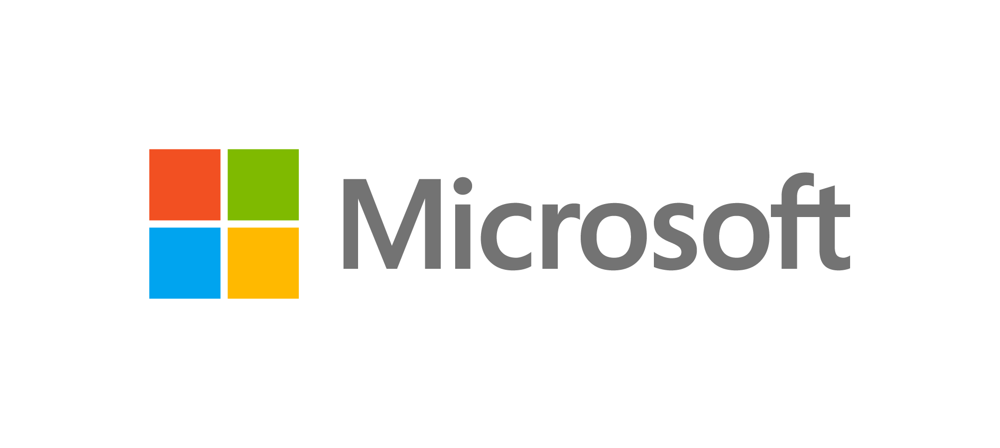

|
|

|

지역 교육청과 협력하여
대상 학교 선정 및 공고
대학생 퍼실리테이터 선발 및
전문 AI 교수법 교육
대학생 퍼실리테이터와 함께하는
체험형 AI 수업
MS 임직원 멘토 멘토링
교육 이수 학생 전원 대상
마이크로소프트 인증 수료증 발급
게임형 학습 콘텐츠를 활용하여 AI의 기초 이해 및 블록코딩 실습을 진행합니다.
생활 속 AI 활용 사례를 탐색하고 데이터 리터러시를 통한 문제 해결 역량을 강화합니다.
생성형 AI의 실무 활용과 MS 임직원 멘토링을 통해 미래 진로를 구체화합니다.
점프는 다양한 배경의 청소년의 교육기회를 확대하고, 미래 포용인재를 양성하여 나눔과 다양성의 가치를 실현하는 비영리 교육 소셜벤처입니다. 현장중심의 다자간 협력모델을 통해 교육, 청년, 기회격차 등 우리사회가 가지고 있는 다양한 문제를 측정가능하고 지속가능한 방식으로 해결하기 위한 다양한 사업을 진행하고 있습니다. 현장 중심의 교육 혁신을 위해 마이크로소프트와 같은 글로벌 파트너와 협력하여 수준 높은 디지털 리터러시 프로그램을 설계합니다. 점프는 단순히 지식을 전달하는 것을 넘어, 사람과 사람을 잇는 연대의 힘으로 지역 사회의 지속 가능한 변화를 이끌어내고 있습니다.
점프 홈페이지 방문하기 →마이크로소프트의 'Empowering Local Futures'는 전 세계 모든 지역 사회가 AI 시대를 주도할 수 있도록 기술 평등을 실현하는 글로벌 사회공헌 비전입니다.
지리적·경제적 여건에 상관없이 모든 청소년이 최신 IT 기술에 접근하고 배울 수 있도록 교육 기회를 확대하는 것을 핵심 가치로 삼고 있습니다.
한국에서는 'Hour of AI' 프로그램을 통해 학생들에게 실질적인 AI 리터러시 경험을 제공하며 미래 인재로 성장하도록 지원합니다.